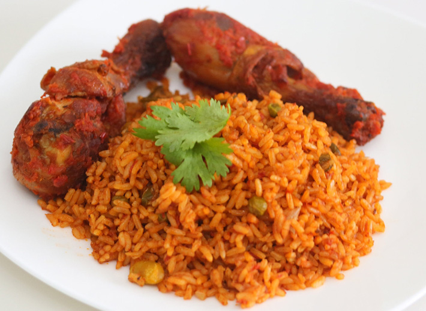
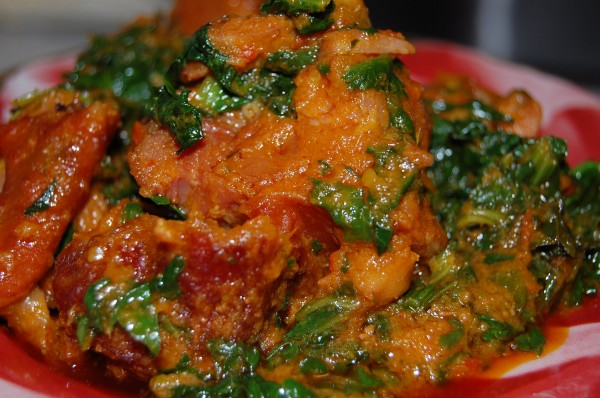
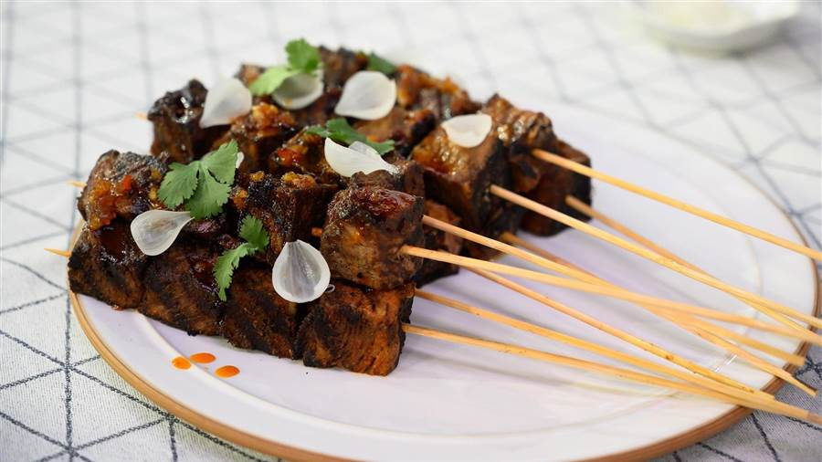
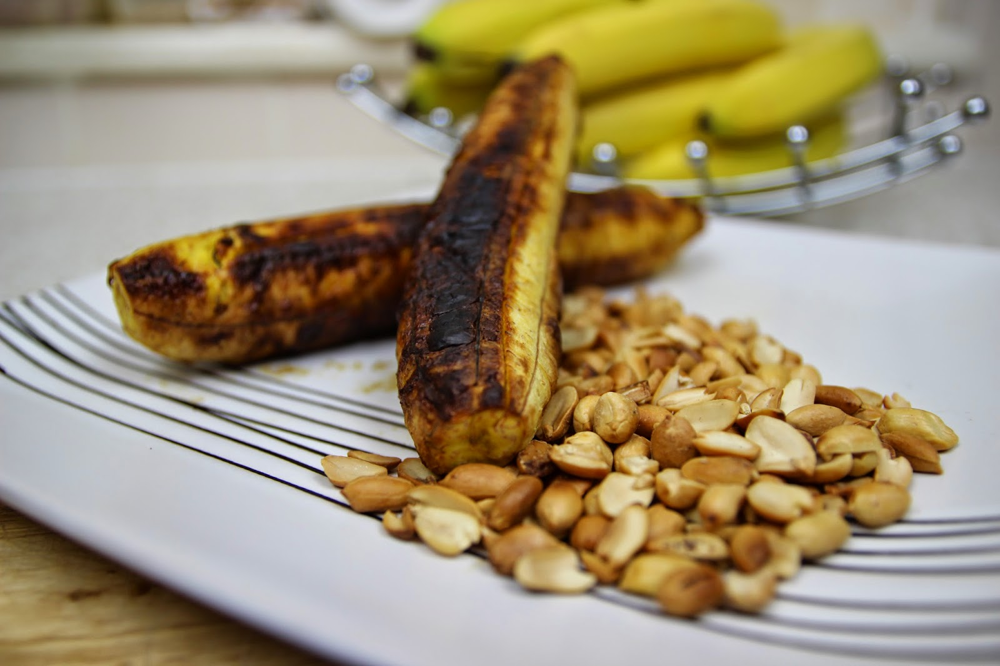

Special Delicacies
 |
 |  |  |  |
There is nothing like experiencing a new taste of food, especially one that is riched with many nutrional values and spices, and this places mentioned below just matches all the requirements needed for a great meal be it brekfast, lunch or dinner.
- Terra Kulture
- The jazzhole
- The Yellow Chilli
- Chicken Republic
- Rodizzio
- Hard Rock Cafe
- Cactus Restaurant
- Jevinik
- Mama put